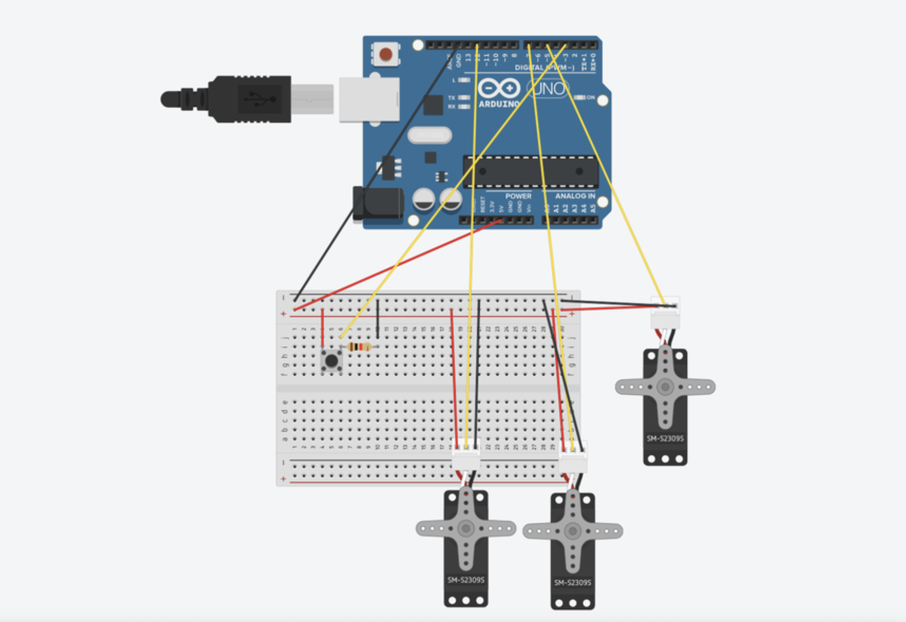
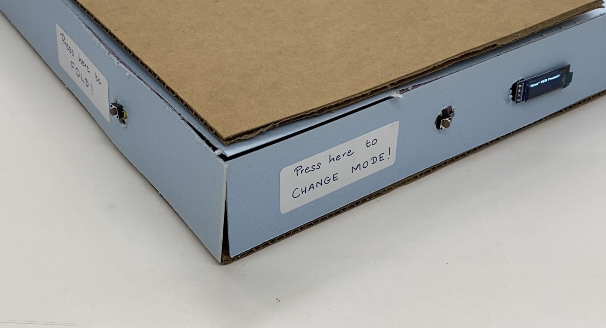
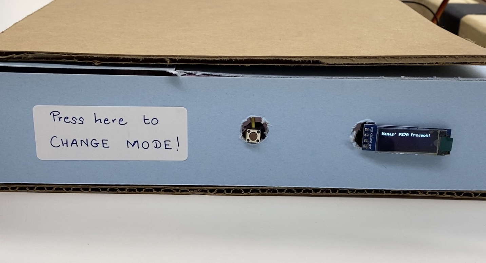
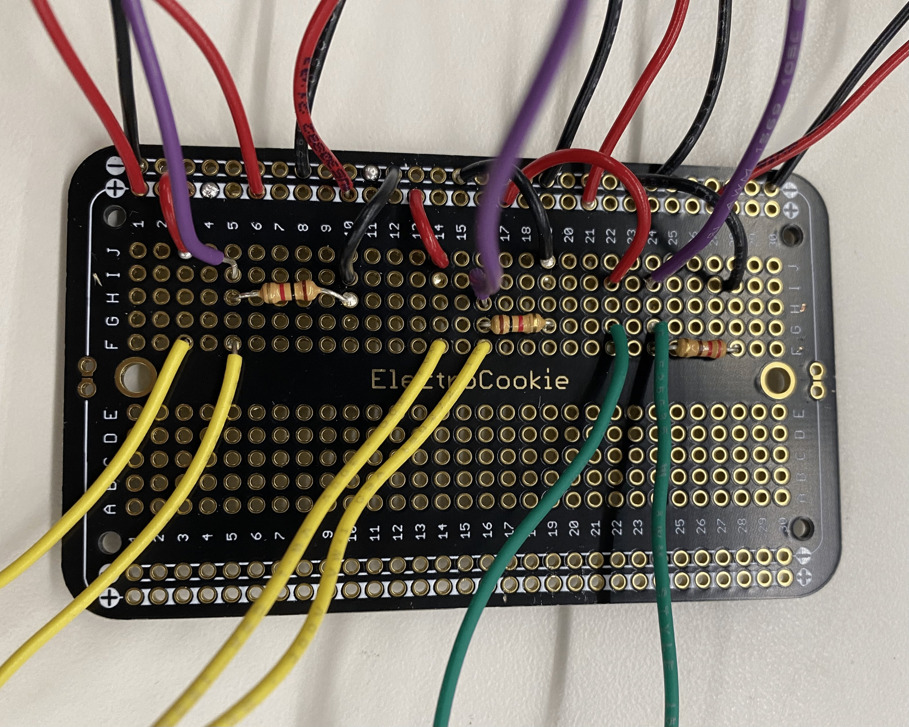
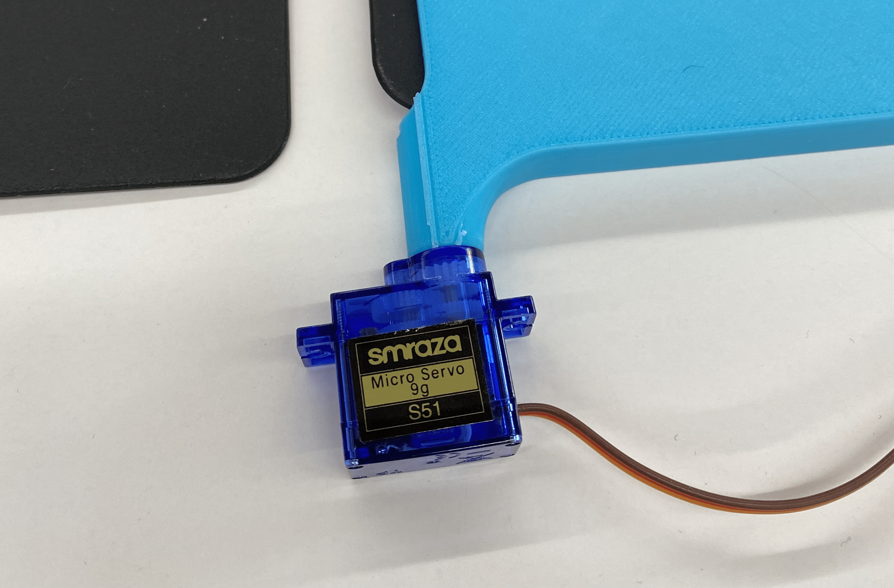

before i dive into my process of ideating, designing, building, coding, wiring, soldering, printing, cutting, and so on, here is the demo video for my final project. make sure to turn on closed captions.
as shown in the video, my final project is a machine that can fold shirts by itself. its features include a manual mode and an automatic mode. in manual mode, shirts can be folded at the press of a button. in automatic mode, the machine can detect when a shirt is placed on it and then fold it without a button having to be pressed. the automatic mode is most suitable for when multiple shirts need to be folded consecutively. the machine also features a screen that notifies the user which mode the machine is currently on, as well as when a manual fold or an automatic fold is being triggered.
although my own personal rationale for building this machine was simply because it could automate a chore that i found myself spending a lot of time doing, the machine has a lot of potential as a piece of assistive technology. people that have trouble with mobility in general and motor control of their hands and arms in particular could benefit greatly from a machine that can fold clothes literally at the press of a button.
# version one (mechanical)
# ---------------------------------
the first step was to create a folding board on which a shirt could be placed. folding a shirt in the most conventional way requires three folds: two lengthwise folds tucking the sides and the arms, and a horizontal fold along the center of the shirt. i set out to create a simple folding board using cardboard. after some research, i found that the size of a shirt ranges from about 24 x 27 inches to about 28 x 32 inches. i figured i would create a folding board that could accomodate the most number of shirts. moreover, a board that can fold an XL shirt can also fold an S shirt, but the reverse may not be true. as a start, i cut up some pieces of cardboard to create a rudimentary t-shirt folding board and loosely taped them together to allow them to fold onto each other.
this seemed to work quite well. while prototyping my final project, i used three servos to imagine how i could flip the three flaps. to be able to do this, i would need to create a base on which the whole machine could rest. the size of the base would be the exact same as that of the folding board. also to create space between the base and the folding board for the servos and the circuitry etc to be housed, i used foam to act as spacers along the four edges.
next, i started creating the horizontal columns to which my servo motors would be attached. this was the most satisfying part of the final project. i truly enjoyed working with wood and using hand fabrication methods to create my columns. i measured out the servos to see how much wood i would have to get cut out. i used an interesting technique to remove wood from the center of a column of wood - by cutting out multiple slots of wood and then sticking a wedge in between the slots to take away the wood. below is a very satifying video of me taking out the wood chips. next, i sanded the wood all around and went through a couple iterations until i achieved the perfect fit for my servos. i would need to arrange my servos in a T shape with two of them laying horizontally and one of them vertically. so i repeated the process with another column of wood for the slot for the third servo.
this is what the servo slotted into the wooden column looked like.
i realized i would need some form of extension for the servo even beyond the horn attachment that it came with. so i attached a long stick of wood onto the servo horn.
# version one (electrical and coding)
# ---------------------------------
it was now time to wire and code the machine. at first, i started off with a simple circuit to attach three servos to an arduino uno.

after wiring the circuit and attaching the servos to the wooden columns, this is what my setup looked like.
this is a flowchart of the actions i wanted the three servo motors to do.
press button.
turn motor 1 in direction x by d degrees. turn motor 1 in direction y by 180 - d degrees.
turn motor 2 in direction y by 180 - d degrees. turn motor 1 in direction x by d degrees.
turn motor 3 in direction z by d degrees. turn motor 1 in direction z' by 180 - d degrees.
check for next button press.
i turned my pseudocode into actual code in arduino ide. click here to download my ino file.
after compiling and uploading the code, this is how the machine functioned.
as seen above in my flowchart, at first i was unsure of what the ideal number of degrees my servos would need to turn by to achieve the ideal rotation. the rotation would have to be large enough to make a clean fold on the shirt but not so large that the folding pads would remain folded and would not return to their original position. i considered attaching the servo horn-wooden dowels to the cardboard folding pads but that would not work either since the path covered by any given point on the wooden dowel would not be exactly the same as any given point on the cardboard panel. this was because the dowel was sliding along the cardboard panel to turn it. if i wanted to create the smoothest possible mechanism, i would need to fashion a slider attached to the cardboard panel along which the end of the wooden dowel could slide. but this seemed like overkill. so, i decided to do some trial and error with changing the number of degrees that the servo would turn and also making the tape connections between adjacent cardboard panels more and less loose. if the tape was holding the panels too close together, they would not turn sufficiently. but if the tape was holding them too loosely, the panels would not fall back down and return to their original position. here are two examples of when the servos turned by too much...
and by too little...
after a ton of trial and error, i was finally able to figure a combination of degrees and tape tightness that enabled the ideal panel movement.
the process of trial and error made me realize how annoying it was to have to press a button everytime i needed to make the servos turn. i imagined that it would be similarly bothersome to have to press a button everytime i wanted to fold a shirt, especially if i needed to fold multiple shirts in a row. this problem becomes even more relevant when the machine is viewed as a piece of assistive technology. so i wondered how i could further automate the process of folding a shirt. if only there was a way for the machine to detect when a shirt had been placed on it and then, after a delay of a second or two, automatically start folding the shirt...
after some pondering, i thought that the best way to achieve this goal would be to simply place a light sensor (a photoresistor) somewhere on the machine such that it could detect when light was being blocked which would indicate that a shirt had been placed on the machine that was obstructing the light. this brought me one step closer to full automation - when i would simply be able to place a basket of laundry in front of the machine and it would turn it into a pile of folded clothes! so i attached a photoresistor to my circuit and updated my code to prompt the servos to turn only when the light reading from the photoresistor was below a certain threshold. this took some more trial and error to figure out what the optimal threshold was for the machine to be able to detect the presence of a shirt. but thankfully, i had worked with photoresistors in week six and i was able to reuse much of the code from that week. here is the ino file of the arduino code i used for my automatic mode.
after testing out the automatic mode, i realized that the automatic mode too was annoying sometimes and there was value in being able to make both a manual and an automatic mode available to the user. so i installed a second button that would allow the user to toggle between the manual and automatic modes. it took a little while to figure out how i could write the code such that one button was used to trigger a fold when the machine was in manual mode, and another button was just used to switch modes. but it ended up working out very well! here is the ino file of the arduino code for a folding machine that both has a manual and an automatic mode.
soon i realized that it was quite hard to keep track of which mode the machine was on. i thought it would be useful to include a screen that notifies the user of which mode is currently being used and also that can notify the user when a fold is being triggered (especially when in automatic mode). this was my first time using an oled screen and so i ended up spending a lot of time just playing around with it and using it to display random graphics. the oled demo code was ultimately the most helpful for figuring out how to program the display. and here is the final arduino code that i used which incorporated the fold button, the photoresistor, the mode button, and the oled screen.
here is an abridged version of an updated flowchart of the actions that my machine would perform.
turn on. default is manual mode.
if fold button pressed, perform actions (turn servo 1 forward and backward, then servo 2, then servo 3).
if mode button pressed, then switch mode from being manual to auto i.e. a boolean called manual changes from true to false.
while in auto mode, if light detected by photoresistor is less than a certain number, perform actions (turning the three servos) after a delay of two seconds.
if mode button pressed again, switch back from auto to manual i.e. boolean manual changes back to true.
here is a video that demonstrates both the modes. in the demo, instead of using a shirt to block the photoresistor, i am simply using my hand. you can also see the oled screen in the video.
once i was satisfied with the functioning of the machine, i spent some time working on its aesthetic. i covered up the foam using blue paper and made discreet holes for the buttons and the screen. i also added labels for both the fold and mode buttons.


# version two
# ---------------------------------
although i was fairly satisfied with my folding machine, i felt as though it was slightly too bulky to be portable, or even potentially viable for commercial mass production. i tried to think of a way that i could make a folding machine that was modular and compact. i wondered if i could simply create some attachments that could be integrated with folding boards that were available for purchase online.
my first step towards making my folding machine more compact was to turn my prototyping breadboard into a soldered circuit breadboard.

next, i imagined that i could create some form of paddle that could go around the panels of the folding board and turn them. this would eliminate the need for a base and foam spacing, and could cut down the size of the machine significantly. here is the stl file of the paddle that i 3d printed, and here is the gcode for it. this is what the paddle looked like when freshly printed.
because of the way it was shaped, it took me a very long time to fully get the 3d printed supports out of the paddles.
this is how i imagined i would position the paddles onto the folding board.
next, i wanted to try out the paddles on some servos. but i soon realized that we didn't have any servos in the lab that functioned properly. i spent a good chunk of time looking for servos and then trying them out in my circuit. sometimes, one big servo would work independently but then would start acting weird when additional servos were added to the circuit. i also did not want to disassemble the older version of the folder because i was not certain of whether or not this new version would come to fruition. at some point, i explored the avenue of simply using microservos instead of the more powerful ones i had been using for the older version of my folding machine. the paddles i 3d printed had been designed for the larger servos and so the holes in them were appropriately sized. instead of printing out completely new paddles, i designed a small attachment that would make the microservo rotator large enough to fit into the paddle. here is the stl file of the servo attachment, and here is the gcode for it. the microservos fit fairly well but i was sure that they would not have enough torque to move even the paddle, let alone the folding board and the shirt.

thankfully kassia came to the rescue! she let me use the old servos from her eyeball device and i was back on track. it was now time to design and print some form of extender rod that could be used to attach the servo to the paddle. this was especially important for the third horizontally moving panel. here is the stl file of the paddle extender, and here is the gcode for it.
to attach the paddles to the dowel-like extenders, i used a screw tap to create a thread on the inside of both the paddle and the extender. next, i used a hacksaw to cut small pieces of a threaded rod and then i tightly screwed the paddle and the extender onto either end of the threaded rod.
i was almost ready to try out the motors, paddles, and extenders on my folding board. but i needed some form of support that would secure my motors. i lasercut a sheet of wood that was thick enough to stand on its side and screwed the motors into the wooden panel. here is the dxf i used for the wooden holder for the two vertically folding motors and here is the dxf for the holder for the one horizontally folding motor. this is what the wooden base ended up looking like.
it was finally time to try out the machine. at first, i thought i would try without the folding board and it was an incredibly pleasant surprise to see it working perfectly!
however, once i slid the folding board into place, the motors refused to turn them as easily. i suspect that this was a combination of two things: 1. there was simply not enough torque for the fold to happen, because of the strength of the motors and the way that the turning point was set up relatively far from the actual turning motor, and 2. i had been unable to achieve a tight enough fit between the small shaft of the motor and the dowel-extender attachments that i had created.
# next steps
# ---------------------------------
i had an incredible time presenting my work at the final project fair. my next steps would be to figure out a more reliable way to create a modular, compact, and portable way to turn a regular folding board into an automated one. in an immediate sense, this would involve solving those two problems: of using more powerful motors and of achieving a better fit between the paddle and the motor. however, in a longer term sense, it would mean putting some more thought into what the actual product could look like and how it could be packaged in a way that was user-friendly and could be easily attached onto any folding board to automate the process of folding.
i am incredibly grateful to nathan, kassia, bobby, ibrahim, jessica, pk, and my classmates for this past semester. i had an incredible time in ps70 and learnt so much more than i could have imagined. as somebody who has always craved being able to build tangible things with my hands but who is stuck in classes that solely require reading and writing, this class has been such a joy and the truly the highlight of time at college. i am so excited at the prospect of the lab remaining open to me for the rest of my time at harvard and i can't wait to keep visiting it to build more fun and useful things.
i am also very grateful to linden for having given a home to my machine, foldy mcfolderson, since i could not take it back home with me. i am sure that foldy will be very useful and will be cared for deeply in his new home!